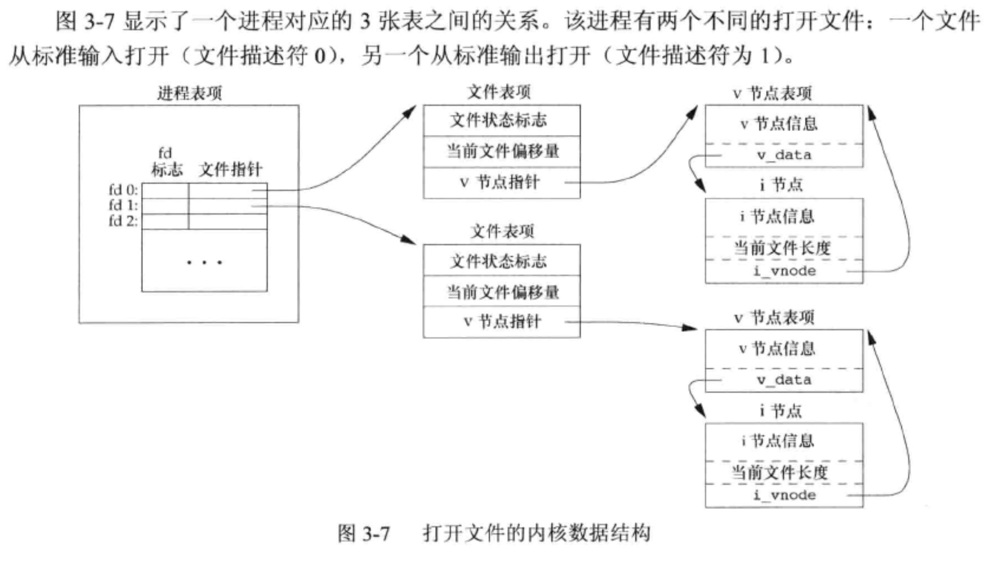
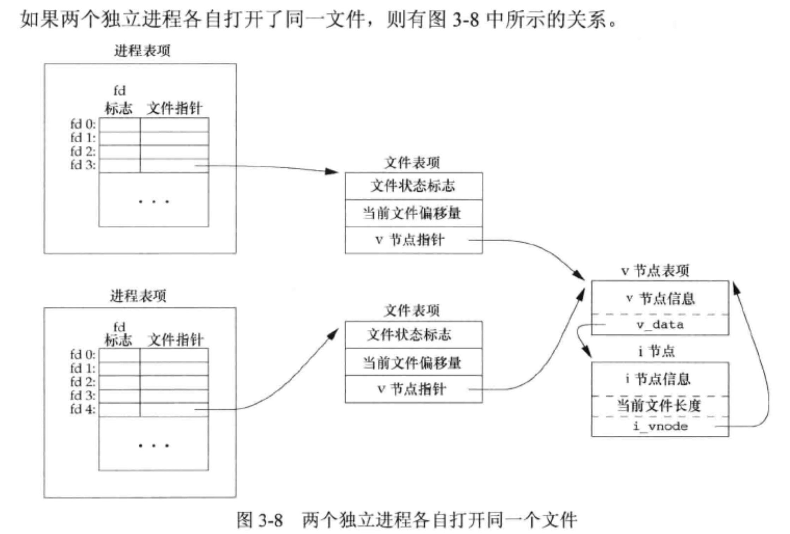
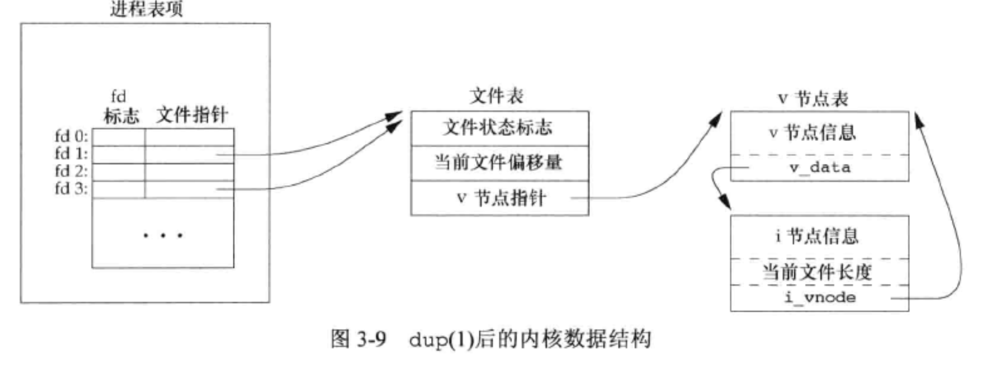

<!DOCTYPE html>
<html lang="en">

<head>
  <meta charset="utf-8" />
   
  <meta name="keywords" content="生活,旅行,思考,代码,博客" />
   
  <meta name="description" content="一座孤岛" />
  
  <meta name="viewport" content="width=device-width, initial-scale=1, maximum-scale=1" />
  <title>
    《APUE》ch3——文件I/O |  akaQin&#39;s Blog
  </title>
  <meta name="generator" content="hexo-theme-yilia-plus">
  
  <link rel="shortcut icon" href="/favicon.ico" />
  
  
<link rel="stylesheet" href="/css/style.css">

  
<script src="/js/pace.min.js"></script>


  

  

<link rel="alternate" href="/atom.xml" title="akaQin's Blog" type="application/atom+xml">
</head>

</html>

<body>
  <div id="app">
    <main class="content">
      <section class="outer">
  <article id="post-《APUE》ch3——文件I-O" class="article article-type-post" itemscope
  itemprop="blogPost" data-scroll-reveal>

  <div class="article-inner">
    
    <header class="article-header">
       
<h1 class="article-title sea-center" style="border-left:0" itemprop="name">
  《APUE》ch3——文件I/O
</h1>
  

    </header>
    

    
    <div class="article-meta">
      <a href="/2019/09/11/%E3%80%8AAPUE%E3%80%8Bch3%E2%80%94%E2%80%94%E6%96%87%E4%BB%B6I-O/" class="article-date">
  <time datetime="2019-09-11T05:11:54.000Z" itemprop="datePublished">2019-09-11</time>
</a>
      
  <div class="article-category">
    <a class="article-category-link" href="/categories/%E3%80%8AAPUE%E3%80%8B%E7%AC%94%E8%AE%B0/">《APUE》笔记</a>
  </div>

      
      
<div class="word_count">
    <span class="post-time">
        <span class="post-meta-item-icon">
            <i class="ri-quill-pen-line"></i>
            <span class="post-meta-item-text"> 字数统计:</span>
            <span class="post-count">2.3k字</span>
        </span>
    </span>

    <span class="post-time">
        &nbsp; | &nbsp;
        <span class="post-meta-item-icon">
            <i class="ri-book-open-line"></i>
            <span class="post-meta-item-text"> 阅读时长≈</span>
            <span class="post-count">8分钟</span>
        </span>
    </span>
</div>

      
    </div>
    

    
    
    <div class="tocbot"></div>


    

    
    <div class="article-entry" itemprop="articleBody">
      


      

      
      <h2 id="文件描述符"><a href="#文件描述符" class="headerlink" title="文件描述符"></a>文件描述符</h2><p>对于内核而言，所有打开的文件都通过文件描述符引用。文件描述符是一个非负整数。当打开一个现有文件或创建一个新文件时，内核向进程返回一个文件描述符。</p>
<ul>
<li>0 - STDIN_FILENO - 标准输入</li>
<li>1 - STDOUT_FILENO - 标准输出</li>
<li>2 - STDERR_FILENO - 标准错误</li>
</ul>
<h2 id="不带缓冲的I-O函数"><a href="#不带缓冲的I-O函数" class="headerlink" title="不带缓冲的I/O函数"></a>不带缓冲的I/O函数</h2><figure class="highlight c"><table><tr><td class="gutter"><pre><span class="line">1</span><br><span class="line">2</span><br><span class="line">3</span><br><span class="line">4</span><br><span class="line">5</span><br><span class="line">6</span><br><span class="line">7</span><br><span class="line">8</span><br><span class="line">9</span><br></pre></td><td class="code"><pre><span class="line"><span class="function"><span class="keyword">int</span> <span class="title">open</span> <span class="params">(<span class="keyword">const</span> <span class="keyword">char</span> *path, <span class="keyword">int</span> oflag, ...<span class="comment">/* mode_t mode */</span>)</span></span>; <span class="comment">//打开或创建一个文件</span></span><br><span class="line"><span class="function"><span class="keyword">int</span> <span class="title">openat</span> <span class="params">(<span class="keyword">int</span> fd, <span class="keyword">const</span> <span class="keyword">char</span> *path, <span class="keyword">int</span> oflag, ...<span class="comment">/* mode_t mode */</span>)</span></span>;</span><br><span class="line"></span><br><span class="line"><span class="function"><span class="keyword">int</span> <span class="title">creat</span> <span class="params">(<span class="keyword">const</span> <span class="keyword">char</span> *path, <span class="keyword">mode_t</span> mode)</span></span>; <span class="comment">//创建一个文件</span></span><br><span class="line"><span class="function"><span class="keyword">int</span> <span class="title">close</span> <span class="params">(<span class="keyword">int</span> fd)</span></span>; <span class="comment">//关闭一个文件</span></span><br><span class="line"></span><br><span class="line"><span class="function"><span class="keyword">off_t</span> <span class="title">lseek</span> <span class="params">(<span class="keyword">int</span> fd, <span class="keyword">off_t</span> offset, <span class="keyword">int</span> whence)</span></span>; <span class="comment">//设置偏移量</span></span><br><span class="line"><span class="function"><span class="keyword">ssize_t</span> <span class="title">read</span> <span class="params">(<span class="keyword">int</span> fd, <span class="keyword">void</span> *buf, <span class="keyword">size_t</span> nbytes)</span></span>; <span class="comment">//读</span></span><br><span class="line"><span class="function"><span class="keyword">ssize_t</span> <span class="title">write</span> <span class="params">(<span class="keyword">int</span> fd, <span class="keyword">const</span> <span class="keyword">void</span> *buf, <span class="keyword">size_t</span> nbytes)</span></span>; <span class="comment">//写</span></span><br></pre></td></tr></table></figure>

<a id="more"></a>

<h3 id="带缓冲与不带缓冲的区别"><a href="#带缓冲与不带缓冲的区别" class="headerlink" title="带缓冲与不带缓冲的区别"></a>带缓冲与不带缓冲的区别</h3><p>所谓不带缓冲，并不是指内核不提供缓冲，而是只单纯的系统调用，不是函数库的调用。系统内核对磁盘的读写都会提供一个块缓冲（在有些地方也被称为内核高速缓存），当用write函数对其写数据时，直接调用系统调用，将数据写入到块缓冲进行排队，当块缓冲达到一定的量时，才会把数据写入磁盘。因此所谓的不带缓冲的I/O是指进程不提供缓冲功能（但内核还是提供缓冲的）。每调用一次write或read函数，直接系统调用。<br>而带缓冲的I/O是指进程对输入输出流进行了改进，提供了一个流缓冲，当用fwrite函数网磁盘写数据时，先把数据写入流缓冲区中，当达到一定条件，比如流缓冲区满了，或刷新流缓冲，这时候才会把数据一次送往内核提供的块缓冲，再经块缓冲写入磁盘。（双重缓冲）<br>因此，带缓冲的I/O在往磁盘写入相同的数据量时，会比不带缓冲的I/O调用系统调用的次数要少。<br>无缓存IO操作数据流向路径：<strong>数据——内核缓存区——磁盘</strong><br>标准IO操作数据流向路径：<strong>数据——流缓存区——内核缓存区——磁盘</strong></p>
<h3 id="预读"><a href="#预读" class="headerlink" title="预读"></a>预读</h3><p>大多数文件系统为改善性能都采用某种预读（read ahead）技术。当检测到正进行顺序读取时，系统就试图读入比应用所要求的更多数据，并假想应用很快就会读这些数据。</p>
<h3 id="延迟写"><a href="#延迟写" class="headerlink" title="延迟写"></a>延迟写</h3><p>传统的UNIX系统实现在内核中设有缓冲区高速缓存或页高速缓存，大多数磁盘I/O都通过缓冲区进行。当我们向文件写入数据时，内核通常先将数据复制到缓冲区中，然后排入队列，晚些时候再写入磁盘。这种方式被成为延迟写（delayed write）。</p>
<h3 id="I-O与磁盘交互流程"><a href="#I-O与磁盘交互流程" class="headerlink" title="I/O与磁盘交互流程"></a>I/O与磁盘交互流程</h3><p>当应用程序尝试读取某块数据的时候，如果这块数据已经存放在页缓存中，那么这块数据就可以立即返回给应用程序，而不需要经过实际的物理读盘操作。当然，如果数据在应用程序读取之前并未被存放在页缓存中（也就是上面提到的内核高速缓存），那么就需要先将数据从磁盘读到页缓存中去(这个过程触发缺页异常)。对于写操作来说，应用程序也会将数据先写到页缓存中去（这里所说的写到页缓存中，如果是调用标准库I/O进行写，那么首先是写到标准库的缓冲区内，如果标准库的缓冲区写满以后，在写到页缓冲内；如果是系统调用，那么直接写到页缓冲内），数据是否被立即写到磁盘上去取决于应用程序所采用的写操作机制：如果用户采用的是同步写机制,那么数据会立即被写回到磁盘上，应用程序会一直等到数据被写完为止；如果用户采用的是延迟写机制，那么应用程序就完全不需要等到数据全部被 写回到磁盘，数据只要被写到页缓存中去就可以了。在延迟写机制的情况下，操作系统会定期地将放在页缓存中的数据刷到磁盘上。与异步写机制不同的是，延迟写机制在数据完全写到磁盘上得时候不会通知应用程序，而异步写机制在数据完全写到磁盘上得时候是会返回给应用程序的。所以延迟写机制本省是存在数据丢失的风险的，而异步写机制则不会有这方面的担心。</p>
<h2 id="文件共享"><a href="#文件共享" class="headerlink" title="文件共享"></a>文件共享</h2><p>内核使用4种数据结构表示打开文件，它们之间的关系决定了在文件共享方面一个进程对另一个进程可能产生的影响。</p>
<ul>
<li><code>进程表</code>。每个进程在进程表中都有一个记录项，记录项中包含一张打开文件描述符表，可将其视为一个矢量，每个描述符占用一项。与每个文件描述符相关联的是：<ol>
<li>文件描述符标志（close_on_exec）</li>
<li>指向一个文件表项的指针</li>
</ol>
</li>
<li><code>文件表</code>。内核为所以打开文件维持一张文件表（全局唯一，所有进程共享一个文件表）。其中的每个文件表项对应一个进程中打开的文件，它包含：<ol>
<li>文件状态标志（只读、只写、读写、追加写、同步/异步、阻塞/非阻塞等）</li>
<li>当前文件偏移量</li>
<li>指向该文件v节点表项的指针</li>
</ol>
</li>
<li><code>v节点</code>。每个打开文件（或设备）都有一个v节点（v-node）结构。v节点包含了文件类型和对此文件进行各种操作函数的指针。对于大多数文件，v节点还包含了该文件的i节点指针。</li>
<li><code>i节点</code>。i节点包含了文件的所有者、文件长度、指向文件实际数据块在磁盘所在位置的指针等。</li>
</ul>
<blockquote>
<p>Linux没有使用v节点，而是使用了通用i节点结构（一个与文件系统相关的i节点，一个与文件系统无关的i节点）。虽然实现不同，但在概念上，v节点与i节点是一样的，两者都指向文件系统特有的i节点结构。</p>
</blockquote>
<p><br></p>
<p>打开该文件的每个进程都能获得各自的一个文件表项，但对一个给的文件只有一个v节点表项。这样每个进程都有它自己对该文件偏移量以及打开方式。<br>可能有多个文件描述符指向同一文件表项的情况，如dup和fork函数。</p>
<h3 id="文件描述符标志与文件状态标志的区别"><a href="#文件描述符标志与文件状态标志的区别" class="headerlink" title="文件描述符标志与文件状态标志的区别"></a>文件描述符标志与文件状态标志的区别</h3><p><strong>前者只用于一个进程的一个描述符，后者则应用于指向该给定文件表项的任何进程中的所有描述符。</strong></p>
<h2 id="原子操作"><a href="#原子操作" class="headerlink" title="原子操作"></a>原子操作</h2><p><code>原子操作（atomic operation）</code>指的是由多步组成的一个操作。如果该操作原子的执行，要么执行完所有步骤，要么一步也不执行，不可能只执行所有步骤的一个子集。任何要求多于一个函数调用的操作都不是原子操作，因为在两个函数调用之间，内核有可能会临时挂起进程。<br>我们用<code>pread</code>和<code>pwrite</code>函数进行I/O来保证<code>lseek</code>和<code>read</code>/<code>write</code>构成原子操作。</p>
<h2 id="其他I-O函数"><a href="#其他I-O函数" class="headerlink" title="其他I/O函数"></a>其他I/O函数</h2><h3 id="dup（dup2）"><a href="#dup（dup2）" class="headerlink" title="dup（dup2）"></a>dup（dup2）</h3><p>用来复制一个现有的文件描述符。复制后每个文件描述符都有它自己的一套文件描述符标志。两个描述符指向同一文件表项，所以它们共享同一文件状态标志（读、写、追加写等）<br></p>
<h3 id="sync、fsync和fdatasync"><a href="#sync、fsync和fdatasync" class="headerlink" title="sync、fsync和fdatasync"></a><code>sync</code>、<code>fsync</code>和<code>fdatasync</code></h3><p>用于保证磁盘上实际文件系统与缓冲区中内容的一致性。</p>
<ul>
<li><code>sync</code>只是将所有修改过的块缓冲区排入写队列就返回，它不等待实际写磁盘操作结束。通常称为update的系统守护进程周期性地（一般为30秒）调用sync函数，这就保证了定期冲洗（flush）内核的块缓冲区。</li>
<li><code>fsync</code>只对由fd指定的一个文件起作用，并等待写磁盘操作结束才返回。</li>
<li><code>fdatasync</code>类似于<code>fsync</code>，但影响文件的数据部分</li>
</ul>
<h3 id="fcntl"><a href="#fcntl" class="headerlink" title="fcntl"></a>fcntl</h3><p>用于改变已经打开文件的属性，主要由以下5种功能：</p>
<ol>
<li>复制一个已有的描述符(cmd = F_DUPFD 或 F_DUPFD_CLOEXEC)</li>
<li>获取/设置文件描述符标志(cmd = F_GETFD 或 F_SETFD)</li>
<li>获取/设置文件状态标志(cmd = F_GETFL 或 F_SETFL)</li>
<li>获取/设置异步I/O所有权(cmd = F_GETONW 或 F_SETOWN)</li>
<li>获取/设置记录锁(cmd = F_GETLK 、 F_SETLK 或 F_SETLKW（阻塞版本）)</li>
</ol>
<h3 id="ioctl"><a href="#ioctl" class="headerlink" title="ioctl"></a>ioctl</h3><p>I/O操作的杂物箱，未总结的其他I/O操作都在里面。</p>
<h2 id="dev-fd"><a href="#dev-fd" class="headerlink" title="/dev/fd"></a>/dev/fd</h2><p>较新的系统都提供/dev/fd目录，其目录项是名为0、1、2等文件，打开文件/dev/fd/n 等效于 复制描述符n（假定描述符n是打开的）。</p>

      
      <!-- reward -->
      
      <div id="reward-btn">
        打赏
      </div>
      
    </div>
    

      <!-- copyright -->
      
        <div class="declare">
          <ul class="post-copyright">
            <li>
              <i class="ri-copyright-line"></i>
              <strong>版权声明： </strong s>
              本博客所有文章除特别声明外，均采用 <a href="https://www.apache.org/licenses/LICENSE-2.0.html" rel="external nofollow"
                target="_blank">Apache License 2.0</a> 许可协议。转载请注明出处！
            </li>
          </ul>
        </div>
        
    <footer class="article-footer">
      
          
<div class="share-btn">
      <span class="share-sns share-outer">
        <i class="ri-share-forward-line"></i>
        分享
      </span>
      <div class="share-wrap">
        <i class="arrow"></i>
        <div class="share-icons">
          
          <a class="weibo share-sns" href="javascript:;" data-type="weibo">
            <i class="ri-weibo-fill"></i>
          </a>
          <a class="weixin share-sns wxFab" href="javascript:;" data-type="weixin">
            <i class="ri-wechat-fill"></i>
          </a>
          <a class="qq share-sns" href="javascript:;" data-type="qq">
            <i class="ri-qq-fill"></i>
          </a>
          <a class="douban share-sns" href="javascript:;" data-type="douban">
            <i class="ri-douban-line"></i>
          </a>
          <!-- <a class="qzone share-sns" href="javascript:;" data-type="qzone">
            <i class="icon icon-qzone"></i>
          </a> -->
          
          <a class="facebook share-sns" href="javascript:;" data-type="facebook">
            <i class="ri-facebook-circle-fill"></i>
          </a>
          <a class="twitter share-sns" href="javascript:;" data-type="twitter">
            <i class="ri-twitter-fill"></i>
          </a>
          <a class="google share-sns" href="javascript:;" data-type="google">
            <i class="ri-google-fill"></i>
          </a>
        </div>
      </div>
</div>

<div class="wx-share-modal">
    <a class="modal-close" href="javascript:;"><i class="ri-close-circle-line"></i></a>
    <p>扫一扫，分享到微信</p>
    <div class="wx-qrcode">
      
    </div>
</div>

<div id="share-mask"></div>
      
      
  <ul class="article-tag-list" itemprop="keywords"><li class="article-tag-list-item"><a class="article-tag-list-link" href="/tags/I-O/" rel="tag">I/O</a></li><li class="article-tag-list-item"><a class="article-tag-list-link" href="/tags/%E6%96%87%E4%BB%B6/" rel="tag">文件</a></li></ul>


    </footer>

  </div>

  
  
  <nav class="article-nav">
    
      <a href="/2019/09/27/%E3%80%8AAPUE%E3%80%8Bch4%E2%80%94%E2%80%94%E6%96%87%E4%BB%B6%E5%92%8C%E7%9B%AE%E5%BD%95/" class="article-nav-link">
        <strong class="article-nav-caption">上一篇</strong>
        <div class="article-nav-title">
          
            《APUE》ch4——文件和目录
          
        </div>
      </a>
    
    
      <a href="/2019/08/27/%E3%80%8AAPUE%E3%80%8Bch2%E2%80%94%E2%80%94UNIX%E6%A0%87%E5%87%86%E5%8F%8A%E5%AE%9E%E7%8E%B0/" class="article-nav-link">
        <strong class="article-nav-caption">下一篇</strong>
        <div class="article-nav-title">《APUE》ch2——UNIX标准及实现</div>
      </a>
    
  </nav>


  

  
  
<!-- valine评论 -->
<div id="vcomments-box">
    <div id="vcomments">
    </div>
</div>
<script src="//cdn1.lncld.net/static/js/3.0.4/av-min.js"></script>
<script src='https://cdn.jsdelivr.net/npm/valine@1.3.10/dist/Valine.min.js'></script>
<script>
    new Valine({
        el: '#vcomments',
        app_id: 'X2Yrs2HgM1dBr94LBlfP7Jsj-gzGzoHsz',
        app_key: 'x2WQjNYF5CQseEAN1iSqXOLQ',
        path: window.location.pathname,
        notify: 'true',
        verify: 'false',
        avatar: 'mp',
        placeholder: '给我的文章加点评论吧~',
        recordIP: true
    });
    const infoEle = document.querySelector('#vcomments .info');
    if (infoEle && infoEle.childNodes && infoEle.childNodes.length > 0) {
        infoEle.childNodes.forEach(function (item) {
            item.parentNode.removeChild(item);
        });
    }
</script>
<style>
    #vcomments-box {
        padding: 5px 30px;
    }

    @media screen and (max-width: 800px) {
        #vcomments-box {
            padding: 5px 0px;
        }
    }

    #vcomments-box #vcomments {
        background-color: #fff;
    }

    .v .vlist .vcard .vh {
        padding-right: 20px;
    }

    .v .vlist .vcard {
        padding-left: 10px;
    }
</style>

  

  
  
  

</article>

</section>
      <footer class="footer">
  <div class="outer">
    <ul class="list-inline">
      <li>
        &copy;
        2019-2020
        Aaron Qin
      </li>
      <li>
        
      </li>
    </ul>
    <ul class="list-inline">
      <li>
        
        
        <span>
  <i>PV:<span id="busuanzi_value_page_pv"></span></i>
  <i>UV:<span id="busuanzi_value_site_uv"></span></i>
</span>
        
      </li>
      <li>
        <!-- cnzz统计 -->
        
      </li>
    </ul>
  </div>
</footer>
    <div class="to_top">
        <div class="totop" id="totop">
  <i class="ri-arrow-up-line"></i>
</div>
      </div>
    </main>
      <aside class="sidebar">
        <button class="navbar-toggle"></button>
<nav class="navbar">
  
  <div class="logo">
    <a href="/"></a>
  </div>
  
  <ul class="nav nav-main">
    
    <li class="nav-item">
      <a class="nav-item-link" href="/">主页</a>
    </li>
    
    <li class="nav-item">
      <a class="nav-item-link" href="/archives">归档</a>
    </li>
    
    <li class="nav-item">
      <a class="nav-item-link" href="/categories">分类</a>
    </li>
    
    <li class="nav-item">
      <a class="nav-item-link" href="/tags">标签</a>
    </li>
    
    <li class="nav-item">
      <a class="nav-item-link" href="/about/me">关于我</a>
    </li>
    
  </ul>
</nav>
<nav class="navbar navbar-bottom">
  <ul class="nav">
    <li class="nav-item">
      
      <a class="nav-item-link nav-item-search"  title="Search">
        <i class="ri-search-line"></i>
      </a>
      
      
      <a class="nav-item-link" target="_blank" href="/atom.xml" title="RSS Feed">
        <i class="ri-rss-line"></i>
      </a>
      
    </li>
  </ul>
</nav>
<div class="search-form-wrap">
  <div class="local-search local-search-plugin">
  <input type="search" id="local-search-input" class="local-search-input" placeholder="Search...">
  <div id="local-search-result" class="local-search-result"></div>
</div>
</div>
      </aside>
      <div id="mask"></div>

<!-- #reward -->
<div id="reward">
  <span class="close"><i class="ri-close-line"></i></span>
  <p class="reward-p"><i class="ri-cup-line"></i>请我喝杯咖啡吧~</p>
  <div class="reward-box">
    
    <div class="reward-item">
      
      <span class="reward-type">支付宝</span>
    </div>
    
    
    <div class="reward-item">
      
      <span class="reward-type">微信</span>
    </div>
    
  </div>
</div>
      
<script src="/js/jquery-2.0.3.min.js"></script>


<script src="/js/jquery.justifiedGallery.min.js"></script>


<script src="/js/lazyload.min.js"></script>


<script src="/js/busuanzi-2.3.pure.min.js"></script>


<script src="/js/share.js"></script>


<script src="/fancybox/jquery.fancybox.min.js"></script>


<script>
  try {
    var typed = new Typed("#subtitle", {
    strings: ['面朝大海，春暖花开','愿你一生努力，一生被爱','想要的都拥有，得不到的都释怀'],
    startDelay: 0,
    typeSpeed: 200,
    loop: true,
    backSpeed: 100,
    showCursor: true
    });
  } catch (err) {
  }
  
</script>


<script src="/js/tocbot.min.js"></script>

<script>
  // Tocbot_v4.7.0  http://tscanlin.github.io/tocbot/
  tocbot.init({
    tocSelector: '.tocbot',
    contentSelector: '.article-entry',
    headingSelector: 'h1, h2, h3, h4, h5, h6',
    hasInnerContainers: true,
    scrollSmooth: true,
    scrollContainer:'main',
    positionFixedSelector: '.tocbot',
    positionFixedClass: 'is-position-fixed',
    fixedSidebarOffset: 'auto',
    onClick: (e) => {
      $('.toc-link').removeClass('is-active-link');
      $(`a[href=${e.target.hash}]`).addClass('is-active-link');
      $(e.target.hash).scrollIntoView();
      return false;
    }
  });
</script>


<script>
  var ayerConfig = {
    mathjax: false
  }
</script>


<script src="/js/ayer.js"></script>


<script src="https://cdn.jsdelivr.net/npm/jquery-modal@0.9.2/jquery.modal.min.js"></script>
<link rel="stylesheet" href="https://cdn.jsdelivr.net/npm/jquery-modal@0.9.2/jquery.modal.min.css">


<!-- Root element of PhotoSwipe. Must have class pswp. -->
<div class="pswp" tabindex="-1" role="dialog" aria-hidden="true">

    <!-- Background of PhotoSwipe. 
         It's a separate element as animating opacity is faster than rgba(). -->
    <div class="pswp__bg"></div>

    <!-- Slides wrapper with overflow:hidden. -->
    <div class="pswp__scroll-wrap">

        <!-- Container that holds slides. 
            PhotoSwipe keeps only 3 of them in the DOM to save memory.
            Don't modify these 3 pswp__item elements, data is added later on. -->
        <div class="pswp__container">
            <div class="pswp__item"></div>
            <div class="pswp__item"></div>
            <div class="pswp__item"></div>
        </div>

        <!-- Default (PhotoSwipeUI_Default) interface on top of sliding area. Can be changed. -->
        <div class="pswp__ui pswp__ui--hidden">

            <div class="pswp__top-bar">

                <!--  Controls are self-explanatory. Order can be changed. -->

                <div class="pswp__counter"></div>

                <button class="pswp__button pswp__button--close" title="Close (Esc)"></button>

                <button class="pswp__button pswp__button--share" style="display:none" title="Share"></button>

                <button class="pswp__button pswp__button--fs" title="Toggle fullscreen"></button>

                <button class="pswp__button pswp__button--zoom" title="Zoom in/out"></button>

                <!-- Preloader demo http://codepen.io/dimsemenov/pen/yyBWoR -->
                <!-- element will get class pswp__preloader--active when preloader is running -->
                <div class="pswp__preloader">
                    <div class="pswp__preloader__icn">
                        <div class="pswp__preloader__cut">
                            <div class="pswp__preloader__donut"></div>
                        </div>
                    </div>
                </div>
            </div>

            <div class="pswp__share-modal pswp__share-modal--hidden pswp__single-tap">
                <div class="pswp__share-tooltip"></div>
            </div>

            <button class="pswp__button pswp__button--arrow--left" title="Previous (arrow left)">
            </button>

            <button class="pswp__button pswp__button--arrow--right" title="Next (arrow right)">
            </button>

            <div class="pswp__caption">
                <div class="pswp__caption__center"></div>
            </div>

        </div>

    </div>

</div>

<link rel="stylesheet" href="https://cdn.jsdelivr.net/npm/photoswipe@4.1.3/dist/photoswipe.min.css">
<link rel="stylesheet" href="https://cdn.jsdelivr.net/npm/photoswipe@4.1.3/dist/default-skin/default-skin.css">
<script src="https://cdn.jsdelivr.net/npm/photoswipe@4.1.3/dist/photoswipe.min.js"></script>
<script src="https://cdn.jsdelivr.net/npm/photoswipe@4.1.3/dist/photoswipe-ui-default.min.js"></script>

<script>
    function viewer_init() {
        let pswpElement = document.querySelectorAll('.pswp')[0];
        let $imgArr = document.querySelectorAll(('.article-entry img:not(.reward-img)'))

        $imgArr.forEach(($em, i) => {
            $em.onclick = () => {
                // slider展开状态
                // todo: 这样不好，后面改成状态
                if (document.querySelector('.left-col.show')) return
                let items = []
                $imgArr.forEach(($em2, i2) => {
                    let img = $em2.getAttribute('data-idx', i2)
                    let src = $em2.getAttribute('data-target') || $em2.getAttribute('src')
                    let title = $em2.getAttribute('alt')
                    // 获得原图尺寸
                    const image = new Image()
                    image.src = src
                    items.push({
                        src: src,
                        w: image.width || $em2.width,
                        h: image.height || $em2.height,
                        title: title
                    })
                })
                var gallery = new PhotoSwipe(pswpElement, PhotoSwipeUI_Default, items, {
                    index: parseInt(i)
                });
                gallery.init()
            }
        })
    }
    viewer_init()
</script>


<script type="text/javascript" src="https://js.users.51.la/20544303.js"></script>
  </div>
</body>

</html>